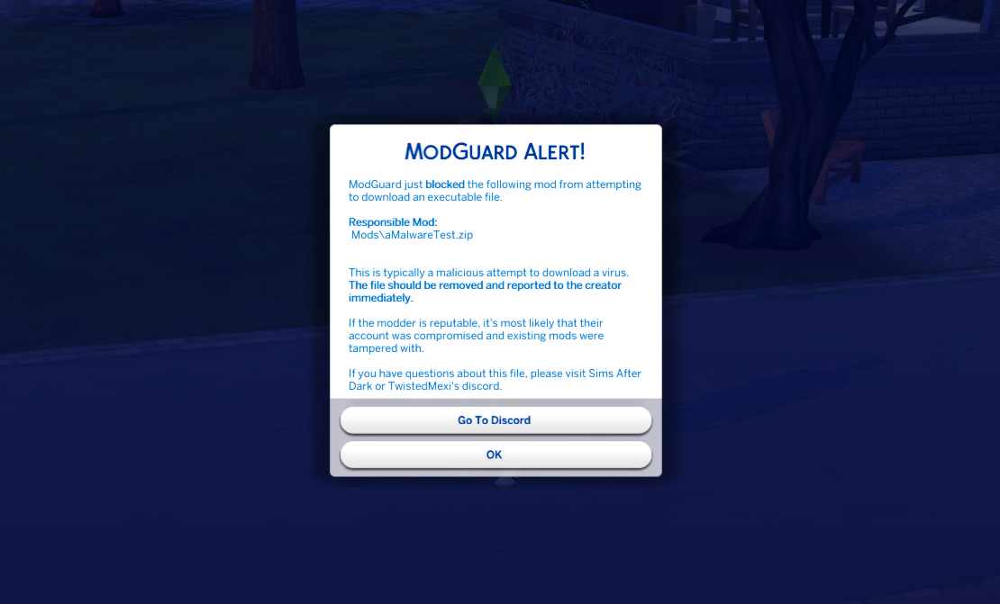
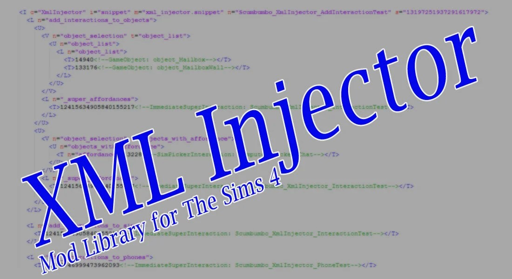
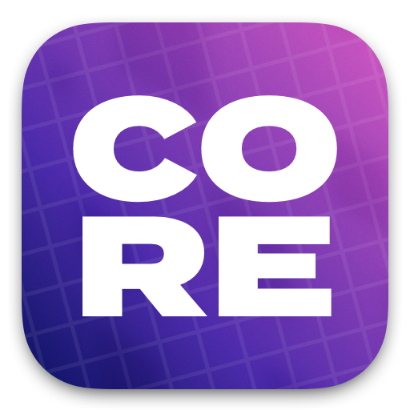

首頁
/
前置模組

ModGuard
模組防毒工具
by
TwistedMexi
模組主體 ｜
TwistedMexi's ModGuard v1.5 Official.zip
備用載點 ｜
無
下載版本 ｜
v1.5
下載日期 ｜
2026.06.08
解壓縮後放進Mods即可

XML INJECTOR
模組注入器
by
SCUMBUMBO
模組主體 ｜
XmlInjector_Script_v4.ts4script
備用載點 ｜
無
下載版本 ｜
v4.2
下載日期 ｜
2025.11.10
一般玩家只需要下載第一個檔案，
在解壓縮之後保留「Script_v4」這個檔案即可。

CORE LIBRARY
LOT51核心庫
by
LOT51
檔案名稱 ｜
lot51_core.ts4script
備用載點 ｜
無
下載版本 ｜
1.43
下載日期 ｜
2026.05.05
The Mood Pack
心情模組
by
Lumpinou
喵嗚 (MeowCats)
模組主體 ｜
Lumpinou_MoodPackMod_v1.677.package
漢化版本 ｜
!_Lumpinou_MoodPackMod_v1.674_Nov2024_CHT_BY MeowCats.package
備用載點 ｜
無
所需DLC ｜
無
下載版本 ｜
v1.677
下載日期 ｜
2026.05.18
漢化版本v1.674_Nov2024
兼容
v1.677版本
Venue Changes
自定義場地
by
Zerbu
檔案名稱 ｜
Venue Changes.zip
備用載點 ｜
無
下載版本 ｜
12th February 2026
下載日期 ｜
2026.05.25
Universal Venue List
通用場地清單
by
Basemental
檔案名稱 ｜
Venue Changes.zip
備用載點 ｜
無
下載版本 ｜
Version: 2.55
下載日期 ｜
2026.06.04
General Pie menus
通用選單
by
a.deep.indigo
檔案名稱 ｜
adeepindigo_base_generalpiemenus_v3.package
備用載點 ｜
無
下載版本 ｜
v3
下載日期 ｜
2026.06.01